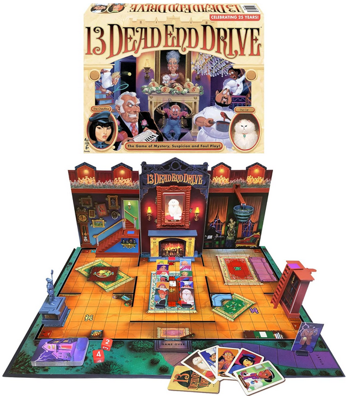

Mouse Trap
Interactive boards and killing(?)
13 Dead End Drive

A bluffing game where you try to conceal your identity.
On your turn you move two of the character pawns on the board. Movement is decided by dice.
The board is a 3D house with several traps. If you move a character to a trap space, you may spring the trap if you have the corresponding card in your hand. You can bluff by moving your opponents' characters towards the entrance or moving your own character onto a trap space, but not release it.
The portrait above the fireplace contains cards for each character plus Aunt Agatha. When you roll doubles, you may change the portrait.
You can win the game in three different ways:
- If you can move your own game counter out of the house when it's the same as the portrait on the wall
- If your game counter is the last surviving.
- If your game counter's portrait is on the wall when the detective enters the main entrance.